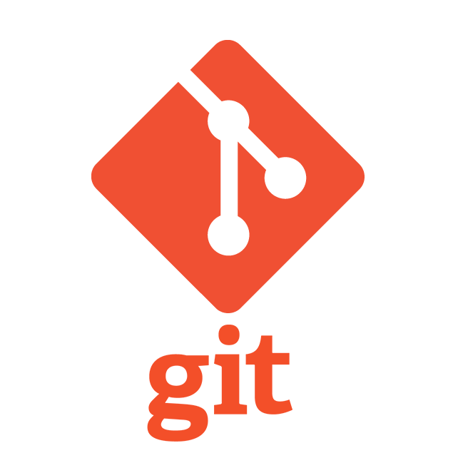
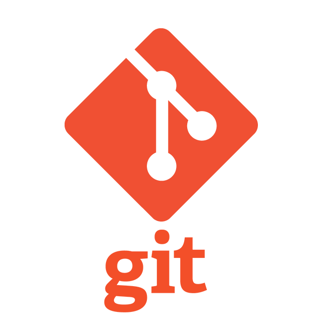

Projetos que desenvolvi/participei

WhoAuthor
O WhoAuthor foi um projeto desenvolvido no IFRN ao
longo dos anos de 2019
e 2021.
O projeto tem como objetivo o desenvolvimento de uma inteligência computacional capaz de reconhecer
padrões de escrita de um determinado texto literário e apontar o seu autor.
Foi utilizado o Prediction by Parcial Machine (PPM-C) na base da inteligência, bem como a linguagem de
programação Java. O relatório completo do projeto pode ser baixado aqui: Relatório do
WhoAuthor.
Registro de patente do WhoAuthor
O WhoAutor (slide anterior) possui duas versões,
ambas com patente
publicada no Instituto Nacional de Propriedade Industrial (INPI). A primeira é um software desktop
feito inteiramente em Java, que foi patenteada em 26/01/2021, com número de registro BR 51 2021 000120
6. A segunda
versão possui um backend em Java com o ecossistema do Spring, além de um fronted desenvolvido em
TypeScript com o apoio do React.ts e foi patenteada no dia 15/02/2022, seu número de
registro é BR 51 2022 000320 1.

Robótica
Ao longo da minha formação no IFRN, participei de
vários projetos
envolvendo robótica. Trabalhei com arduíno durante dois anos (2019-2020), entrei em contato com a
linguagem
de programação do microcontrolador, tive diversas aulas de eletrônica durante esse período, além de
montar meu próprio robô com componentes eletrônicos e o próprio arduíno. Participei também como
ouvinte na Olimpíada Brasileira de Robótica de 2019 e participei como competidor na Olimpíada de
Robótica do IFRN na Semana de Ciência (SECITEX) de 2019. Em 2022, fui monitor de robótica da semana de
inverno na seleção do talento metrópole, programa de mentoria do IMD/UFRN.

LabCoMU
Na primeira semana a partir do meu ingresso no
bacharelado em Tecnologia da Informação no IMD/UFRN eu já participava de um projeto de desenvolvimento
como membro do Laboratótio de Computação Móvel e Ubíqua (LabCoMU).
O projeto era uma parceria entre o IMD e a empresa internacional SIEMENS. Minha tarefa era criar um
ambiente integrado para a equipe de vendas da empresa, um sistema completo, capaz de registrar todas
as propostas de venda, solicitações e fluxo de pedidos etc. Participei da equipe de desenvolvimento
como programador Fullstack, onde era utilizado o Java com o ecossistema Spring e o Thymeleaf para a
interface gráfica. O projeto teve início em abril de 2022 e finalizou em novembro do mesmo ano.
REGINA
Em dezembro de 2022 ingressei no projeto INMS55
(Intelligent Network Management System for 5G), como membro do REsearch Group on INternet services and
Applications of the future (REGINA Lab).
O IMD/UFRN possui uma grande parceria com a multinacional Lenovo.
O projeto visa a pesquisa e o desenvolvimento de soluções no âmbito da rede de 5ª geração, o 5G.
Trabalho como desenvolvedor Backend com Java e Dropwizard, além de realizar várias tarefas de DevOps
com ferramentas de conteinerização com o Docker, Podman e Kubernetes, de virtualização com o
OpenStack e Open Source MANO, de monitoramento com Grafana e Prometheus, de mensageria como RabbitMQ e
com diversos outros conceitos de telecomunicações, redes e desenvolvimento, como KPI, NFV/NFC etc.
Innotracker
Em maio de 2024 inicei a participação como
Desenvolvedor Backend e DevOps no projeto
Innotracker, projeto esse que faz parte de uma parceria entre a empresa Innomotics e o IMD/UFRN. O
Innotracker é um sistema de gerenciamento e de análise de riscos de mercado no fluxo de pedidos da
empresa. No projeto, é utilizado a linguagem Java no desenvolvimento backend, juntamente com o
Thymeleaf para gerar um Frontend web. Tecnologias avançadas de CI/CD com o Gitlab, gerenciamento de
Gitlab runners, deploy em produção e homologação com Docker e Kubernetes, são algumas das abordagens
DevOps utilizadas no projeto.

 
